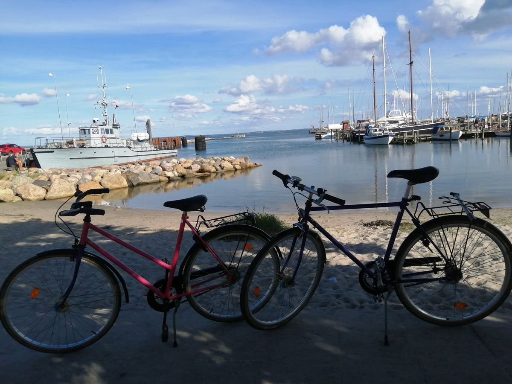
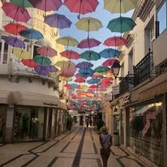

📷 Galeria



Opisuję miejsca, które odwiedziłem, polecam ciekawe kierunki i dzielę się historiami z podróży.
Dowiedz się więcejŻycie każdego dnia uczy mnie, aby się nie poddawać. Wierzę, że podróże, nowe miejsca i poznawanie ludzi pomagają nam się rozwijać, lepiej rozumieć siebie i patrzeć w przyszłość z większą odwagą. Ponad rok temu się rozstałem. Historia i los potoczyły się tak, że straciłem coś, co było dla mnie niezwykle ważne. Można powiedzieć, że zawalił się fundament, na którym przez długi czas opierało się całe moje życie. Zatraciłem siebie dla drugiej osoby i dla uczucia, wierząc, że właśnie w ten sposób można uratować wspólny czas, chwile i to, co kiedyś było piękne. Wierzyłem, że druga strona zrozumie moje starania, zobaczy, że naprawdę wkładam w tę relację całe swoje serce. Wiedziałem jednak, że wiele rzeczy w życiu układa się poza naszą kontrolą i że czasami potrzebujemy wsparcia, obecności oraz wyciągniętej dłoni drugiego człowieka. Ten sposób walki o relację sprawił jednak, że z czasem zatarła się najważniejsza rzecz — szczera rozmowa, wzajemne zrozumienie oraz dostrzeganie swoich potrzeb. Oddając siebie komuś innemu, zapomniałem o własnym życiu, własnym szczęściu i własnych wartościach. Skupiłem się przede wszystkim na tym, aby uszczęśliwić drugą osobę, zaniedbując przy tym siebie, swoje zdrowie i poczucie własnej wartości. Dzisiaj wiem, że to był błąd. Czasami wierzymy, że to, co podpowiada serce, uda się przekonać rozumowi. Że gdzieś w oddali czeka jeszcze ciepło, bliskość i szczęście. Wierzymy, że jeśli robimy coś z całego serca i prawdziwej szczerości, to nie ma możliwości, aby się nie udało. Niestety, nawet najczystsze intencje i największa potrzeba naprawienia czegoś mogą stać się destrukcyjne, jeśli zabraknie rozmowy, wzajemnego zrozumienia i chęci działania po obu stronach. Była to jedna z najbardziej emocjonalnych i trudnych historii w moim życiu. Jednak wierzę, że wszystko, co miałem z niej wynieść, zostało przeze mnie zrozumiane i zapamiętane na przyszłość. Po długim czasie zrozumiałem, że muszę zacząć budować swój własny fundament — stabilny, silny i niezależny od tego, kto pojawi się w moim życiu. Dopiero wtedy można stworzyć kolejny fundament razem z drugą osobą — nie z potrzeby ratowania siebie, ale z chęci wspólnego budowania czegoś pięknego. Odejść w zgodzie, pozwolić drugiej osobie żyć własnym życiem i jednocześnie pozwolić sobie samemu rozpocząć własną drogę — to wymaga dojrzałości emocjonalnej, siły i spokoju ducha. Cały czas się teg uczę, wygaszać emocje i uczucia, które do tej pory cały czas mną sterowały, nie pozwalały odpuścić i odejść. Wiem, że właśnie w ten sposób można dać szczęście sobie i komuś innemu — zamykając pewien etap w takim stanie i miejscu w jakim jest. Gdy emocje biorą górę, zapominamy cieszyć się z drugą osobą każdą chwilą, cząstką czasu, doceniając ją. Dzisiaj jestem otwarty na nowe przygody, podróże, doświadczenia i relacje. Chcę poznawać ludzi, odkrywać nowe miejsca i tworzyć kolejne historie.
Tu dodam później interaktywną mapę świata.

